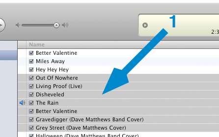
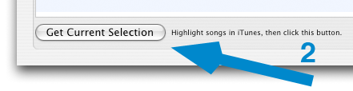
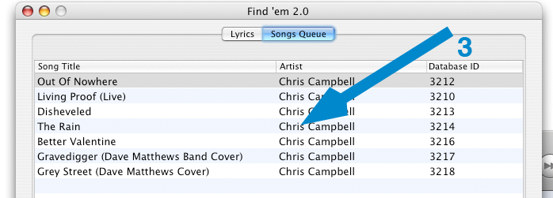

Adding songs to Findem
To use Findem, you first have to add some songs that you want to set the lyrics for. This can be done using the following steps.
To add songs to Findem
- Select a bunch of songs in iTunes to find lyrics for
- Click the 'Get Current Selection' button in Findem
- Your songs are now queued and ready to go!


